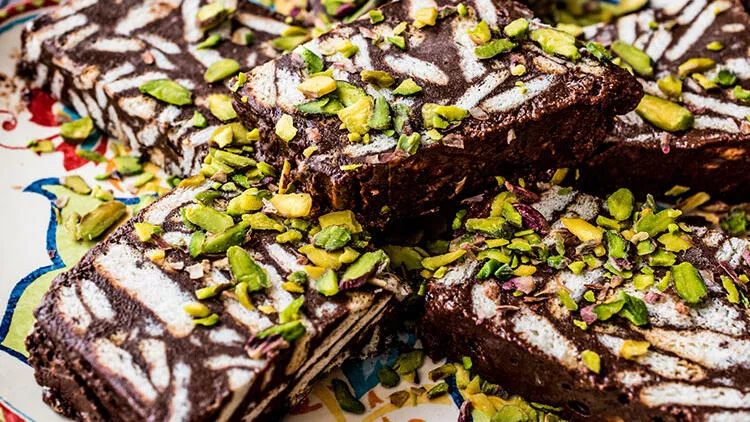

Begüm'ün Tarifleri
-
Bugün bir çoğumuzun vazgeçilmezi olan mozaik pasta nasıl yapılır onu öğreneceğiz.Kolay ve hızlı bir şekilde hazırlanabilen bu tatlıyı sizin de canınız istediyse hemen tarife geçelim!
4-6 Kişilik
15 Dakika Hazırlık
Pişirme Yok
Mozaik Pasta İçin Gerekli Malzemeler
2 paket Pötibör Bisküvi (400 gr)
2 su bardağı süt (400 ml)
3 yemek kaşığı Piyale Toz Kakao
5 yemek kaşığı şeker
2 yemek kaşığı Mis Tereyağı
1 su bardağı ceviz veya fındık (isteğe bağlı)
Üzeri için ;
2 paket Pötibör Bisküvi (400 gr)
Mozaik Pasta Tarifi Nasıl Yapılır?
- Öncelikle tereyağını tencereye alarak eritelim.
- Yağ eridikten sonra üzerine sütü ekleyerek karıştıralım.
- Ardından üzerine kakao ve şekeri ekleyerek biraz daha karıştıralım ve ocaktan alalım.
- Bisküvileri robota alalım ve robotu çalıştıralım.
- Robottan geçirdiğimiz bisküvileri derin bir kaba alalım, üzerine hazırladığımız kakaolu sosu dökelim.
- Son olarak iri kıyılmış cevizi de ekleyerek spatula yardımıyla harcı karıştıralım.
- Hazır olan harcı içerisine pişirme kağıdı serdiğimiz kabımıza alalım ve yayarak düzeltelim.>
- Daha sonra bıçakla dilediğimiz boyutlarda dilimleyelim.
- Mozaik pasta dilimlerinin üzerine eritilmiş çikolata sürüp antep fıstığı serpelim ve dinlenmeye bırakalım.
- Dinlenen ve üzerindeki çikolata donan mozaik pastalar servise hazır. Afiyet olsun!
